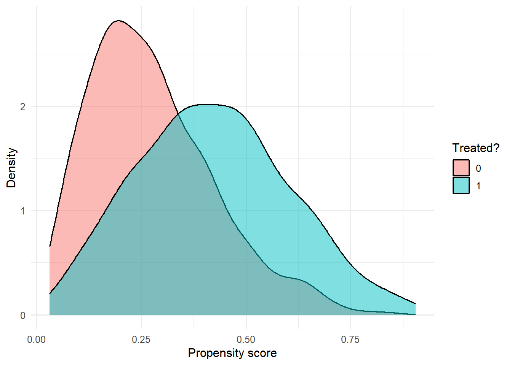
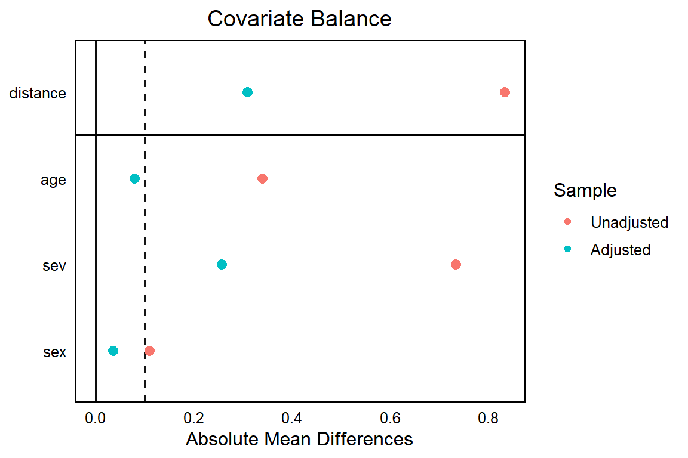

library(tidyverse)
library(MatchIt)
library(cobalt)
set.seed(42)
theme_set(theme_minimal(base_size = 12))Week 3, Session 4 — Propensity scores and IPTW
Course 3 — Biostatistics Courses
Note
Inference lab using the five-step template: Hypothesis → Visualise → Assumptions → Conduct → Conclude.
Learning objectives
- Estimate a propensity score and match nearest-neighbour with
MatchIt. - Construct inverse-probability-of-treatment weights (IPTW) and fit a weighted outcome model.
- Diagnose covariate balance with
cobalt::love.plot.
Prerequisites
Session 3 (DAGs). Course 2 logistic regression.
Background
The propensity score is the probability of being treated given covariates. Under the assumptions of conditional exchangeability and positivity, conditioning on the propensity score yields an unbiased estimate of the average treatment effect. Matching and inverse-probability-of-treatment weighting are two ways to do that conditioning.
Matching pairs each treated unit with one (or more) untreated units with similar propensity scores, then analyses the matched sample. IPTW gives each unit a weight of 1/e(X) if treated and 1/(1 − e(X)) if untreated, creating a pseudo-population where treatment is independent of X. Both estimators require the propensity model to be correctly specified; neither handles unmeasured confounding.
Balance diagnostics assess whether the matched or weighted sample has covariate distributions that are similar across treatment groups. The standardised mean difference (SMD) is the workhorse metric; anything below 0.1 is usually considered balanced.
Large weights (extreme propensities near 0 or 1) are a sign of poor positivity. Stabilised weights and truncation can help, but the underlying problem — a region of covariate space where one treatment is never seen — cannot be fixed statistically.
Setup
1. Hypothesis
Treatment reduces the outcome by a known amount. We will estimate the effect with naive regression, matching, and IPTW, and compare with the simulated truth.
2. Visualise
n <- 1000
dat <- tibble(
age = rnorm(n, 60, 10),
sev = rnorm(n, 0, 1),
sex = rbinom(n, 1, 0.5)
) |>
mutate(ps = plogis(-1 + 0.04 * (age - 60) + 0.8 * sev + 0.3 * sex),
trt = rbinom(n, 1, ps),
y = 2 - 1.5 * trt + 0.05 * (age - 60) +
0.8 * sev + 0.3 * sex + rnorm(n, 0, 1))
ggplot(dat, aes(ps, fill = factor(trt))) +
geom_density(alpha = 0.5) +
labs(x = "Propensity score", y = "Density", fill = "Treated?")
3. Assumptions
No unmeasured confounding (conditional exchangeability); positivity (everyone has a non-zero chance of each treatment); correct specification of the propensity model.
4. Conduct
# Naive regression
fit_naive <- lm(y ~ trt + age + sev + sex, data = dat)
coef(fit_naive)["trt"] trt
-1.502417 # Nearest-neighbour matching
m <- matchit(trt ~ age + sev + sex, data = dat,
method = "nearest", ratio = 1)
mA `matchit` object
- method: 1:1 nearest neighbor matching without replacement
- distance: Propensity score
- estimated with logistic regression
- number of obs.: 1000 (original), 688 (matched)
- target estimand: ATT
- covariates: age, sev, sexmatched <- match.data(m)
fit_match <- lm(y ~ trt, data = matched,
weights = matched$weights)
coef(fit_match)["trt"] trt
-1.281375 # IPTW
dat <- dat |>
mutate(w = if_else(trt == 1, 1 / ps, 1 / (1 - ps)))
fit_iptw <- lm(y ~ trt, data = dat, weights = w)
coef(fit_iptw)["trt"] trt
-1.592614 love.plot(m, thresholds = c(m = 0.1), abs = TRUE)
5. Concluding statement
The simulated treatment effect was −1.5. The naive regression gave -1.5; nearest-neighbour matching gave -1.28; IPTW gave -1.59. Balance plots showed that matching reduced all SMDs below 0.1.
Make sure students understand that a well-balanced sample is a necessary but not sufficient condition for an unbiased effect estimate.
Common pitfalls
- Matching with replacement without adjusting inference for the repeated use of controls.
- Reporting only the p-value for the treatment effect in the weighted model without a sandwich or bootstrap standard error.
- Ignoring extreme weights.
- Picking the matching method that gives the effect you wanted.
Further reading
- Austin PC (2011), An introduction to propensity score methods for reducing the effects of confounding in observational studies.
- Stuart EA (2010), Matching methods for causal inference.
- Hernán MA, Robins JM. Causal Inference: What If, ch. 12.
Session info
sessionInfo()R version 4.5.2 (2025-10-31 ucrt)
Platform: x86_64-w64-mingw32/x64
Running under: Windows 11 x64 (build 26200)
Matrix products: default
LAPACK version 3.12.1
locale:
[1] LC_COLLATE=English_Germany.utf8 LC_CTYPE=English_Germany.utf8
[3] LC_MONETARY=English_Germany.utf8 LC_NUMERIC=C
[5] LC_TIME=English_Germany.utf8
time zone: Europe/Berlin
tzcode source: internal
attached base packages:
[1] stats graphics grDevices utils datasets methods base
other attached packages:
[1] cobalt_4.6.2 MatchIt_4.7.2 lubridate_1.9.5 forcats_1.0.1
[5] stringr_1.6.0 dplyr_1.2.0 purrr_1.2.2 readr_2.2.0
[9] tidyr_1.3.2 tibble_3.3.1 ggplot2_4.0.3 tidyverse_2.0.0
loaded via a namespace (and not attached):
[1] gtable_0.3.6 jsonlite_2.0.0 compiler_4.5.2 Rcpp_1.1.1-1.1
[5] tidyselect_1.2.1 scales_1.4.0 yaml_2.3.12 fastmap_1.2.0
[9] R6_2.6.1 labeling_0.4.3 generics_0.1.4 knitr_1.51
[13] backports_1.5.1 htmlwidgets_1.6.4 chk_0.10.0 pillar_1.11.1
[17] RColorBrewer_1.1-3 tzdb_0.5.0 rlang_1.2.0 stringi_1.8.7
[21] xfun_0.57 S7_0.2.2 otel_0.2.0 timechange_0.4.0
[25] cli_3.6.6 withr_3.0.2 magrittr_2.0.4 digest_0.6.39
[29] grid_4.5.2 hms_1.1.4 lifecycle_1.0.5 vctrs_0.7.3
[33] evaluate_1.0.5 glue_1.8.0 farver_2.1.2 rmarkdown_2.31
[37] tools_4.5.2 pkgconfig_2.0.3 htmltools_0.5.9